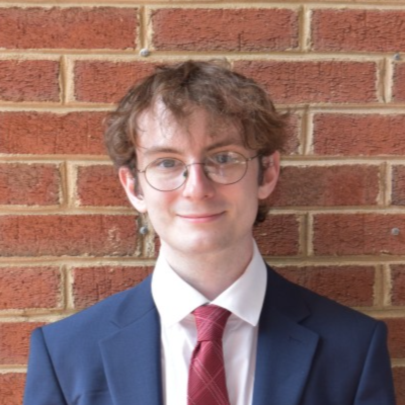
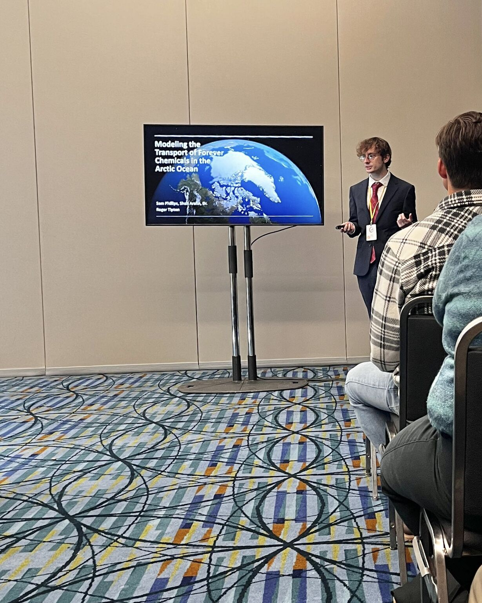
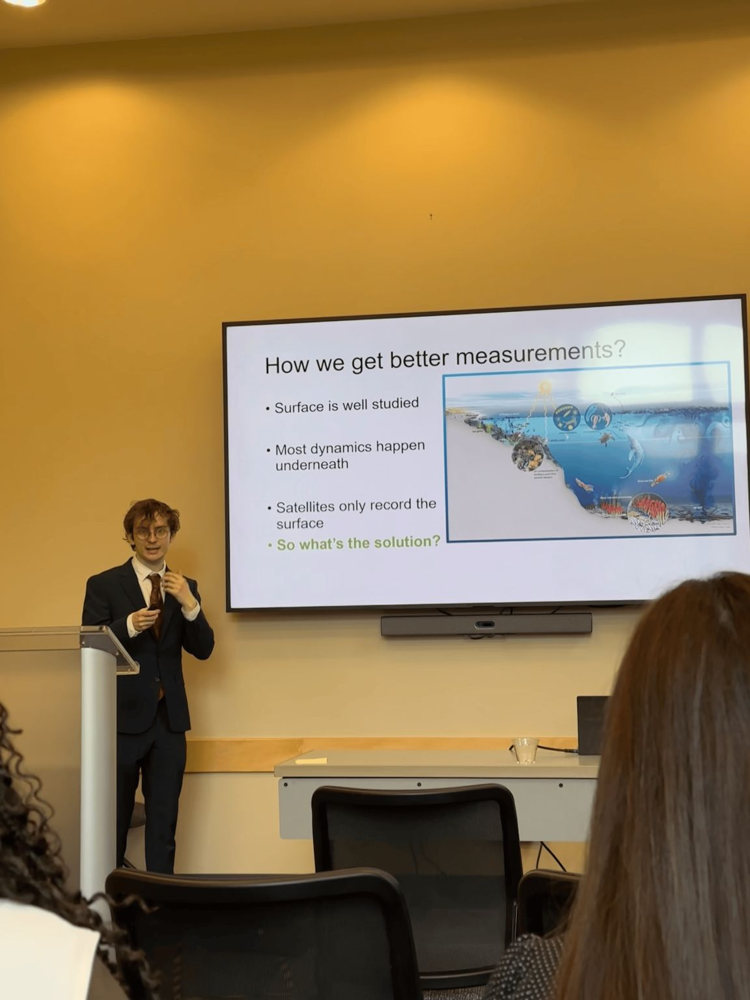
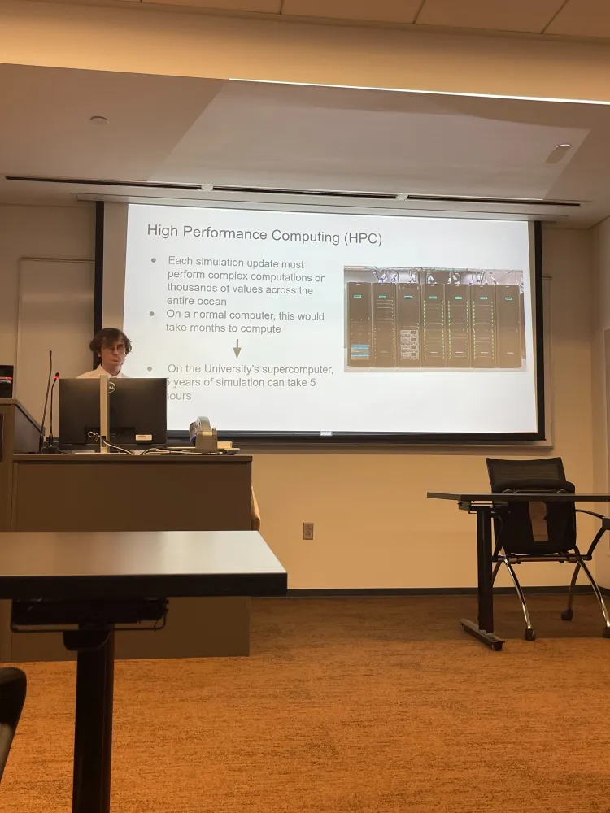

Samuel B. Phillips
CS & Math @ UNC Charlotte | Representation Learning for Dynamic Systems

I'm a deep learning researcher — representation learning specifically is what I find most interesting, the question of what structure a network actually learns and whether it's meaningful. I enjoy figuring that out as much as I enjoy building the systems to actually test it. So far this has taken me to Arctic contaminant transport, ocean biogeochemistry, and food safety prediction.
I'm an undergraduate at UNC Charlotte, pursuing a dual B.S. in Computer Science (Data Science) and Mathematics alongside an early-entry M.S. in Computer Science. I'm currently looking at thesis-based M.S. programs as a step toward a Ph.D. and a research career, ideally at a national lab.
Currently
- Developing a physics-informed neural network to correct Arctic PFAS transport simulations, targeting AGU Fall 2026.
- Building a transformer-based architecture for biogeochemical state reconstruction from Argo float data, targeting Geoscientific Model Development.
- Looking for thesis-based M.S. programs as a step toward a Ph.D.
See the Research page for more on current projects, or my CV for the full picture.
Talks
- Modeling the Transport of Forever Chemicals in the Arctic
National Conference on Undergraduate Research (NCUR), 2026 - Learning Ocean Dynamics from Sparse Data Using Scientific AI
UNC Charlotte Undergraduate Research Conference (URC), 2026 - Using Data Science to Model Global Microplastic Transport
UNC Charlotte OUR Honors Symposium, 2025


